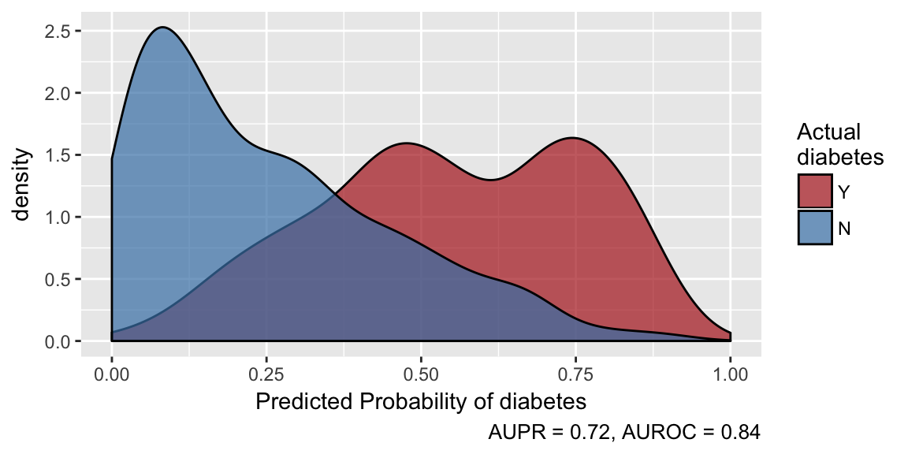
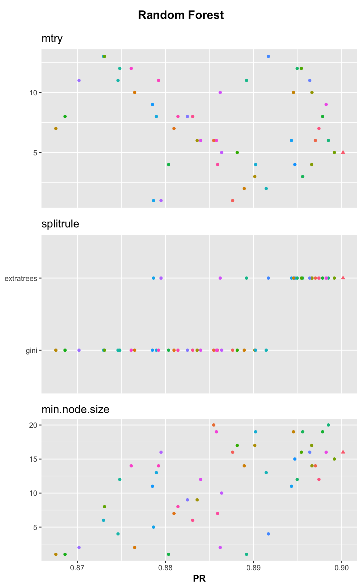
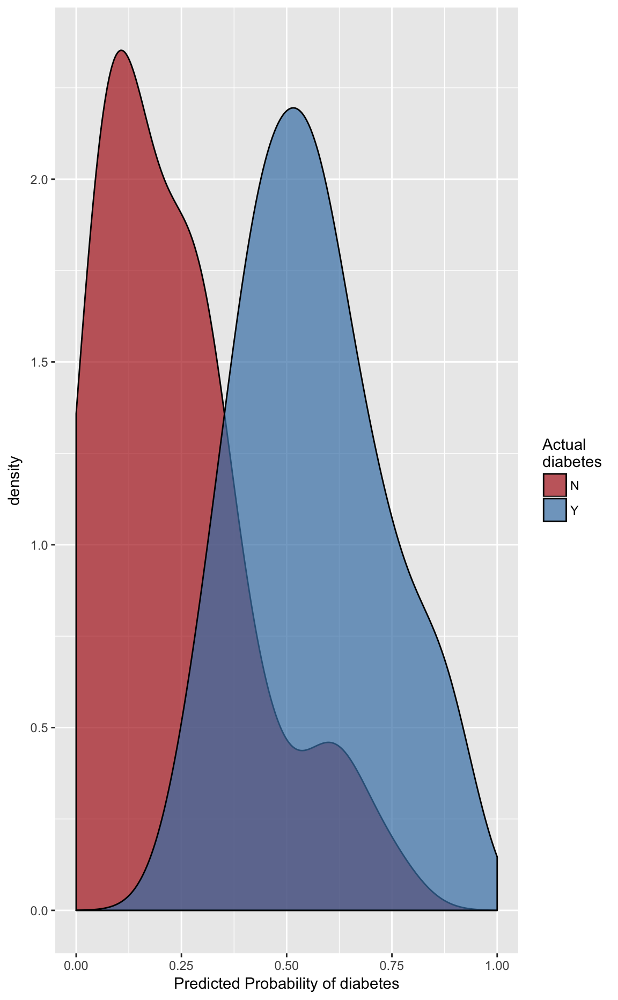

First we “attach” the healthcareai R package to make its functions available. If your package version is less than 2.0, none of the code here will work. You can check the package version with packageVersion("healthcareai"), and you can get the latest, cutting-edge development version with install.packages("remotes"); remotes::install_github("HealthCatalyst/healthcareai-r").
healthcareai comes with a built in dataset on diabetes among adult Pima females. Once you attach the package, the dataset is available in the variable name pima_diabetes. Let’s take a look at the data. There are 768 records in 10 variables, including one identifier column, and there seems to be substantial missingness (represented in R by NA).
str(pima_diabetes)
## Classes 'tbl_df', 'tbl' and 'data.frame': 768 obs. of 10 variables:
## $ patient_id : int 1 2 3 4 5 6 7 8 9 10 ...
## $ pregnancies : int 6 1 8 1 0 5 3 10 2 8 ...
## $ plasma_glucose: int 148 85 183 89 137 116 78 115 197 125 ...
## $ diastolic_bp : int 72 66 64 66 40 74 50 NA 70 96 ...
## $ skinfold : int 35 29 NA 23 35 NA 32 NA 45 NA ...
## $ insulin : int NA NA NA 94 168 NA 88 NA 543 NA ...
## $ weight_class : chr "obese" "overweight" "normal" "overweight" ...
## $ pedigree : num 0.627 0.351 0.672 0.167 2.288 ...
## $ age : int 50 31 32 21 33 30 26 29 53 54 ...
## $ diabetes : chr "Y" "N" "Y" "N" ...Suppose we don’t want to fuss with any details any more than necessary. healthcareai makes it easy to implement machine learning models and takes care of all of the detais in the background so that you don’t have to worry about them. Of course it might be wise to worry about them, and we’ll get to how to do that further down, but for now, you can take care of any problems in the data, do some basic feature engineering, and tune multiple machine learning models using cross validation with the high-level machine_learn function.
machine_learn always gets the name of the data frame, then any columns that should not be used by the model (uninformative columns, such as IDs), then the variable to be predicted with outcome =.
quick_models <- machine_learn(pima_diabetes, patient_id, outcome = diabetes)
## Training new data prep recipe
## Variable(s) ignored in prep_data won't be used to tune models: patient_id
## diabetes looks categorical, so training classification algorithms.
## Running cross validation for Random Forest
## Running cross validation for k-Nearest Neighborsmachine_learn has told us that it has created a recipe for data preparation (this makes it easy to do the same data cleaning and feature engineering when you want predictions on a new dataset), is ignoring patient_id when tuning models as we told it to, is training classification algorithms because the outcome variable diabetes is categorical, and has executed cross validation for two machine learning models, random forests, and k-nearest neighbors. Let’s see what’s in the object it has created.
quick_models
## Algorithms Trained: Random Forest, k-Nearest Neighbors
## Target: diabetes
## Class: Classification
## Performance Metric: ROC
## Number of Observations: 768
## Number of Features: 12
## Models Trained: 2018-03-30 13:43:51
##
## Models tuned via 5-fold cross validation over 9 combinations of hyperparameter values.
## Best model: Random Forest
## ROC = 0.84
## Optimal hyperparameter values:
## mtry = 5
## splitrule = extratrees
## min.node.size = 12It has some details about the dataset and the model training, and it tells us that the best model is is a random forest that achives performance of AUROC of 0.85. Not bad for one line of code.
We can make predictions using the predict function. If you provide a new data frame to predict it will make predictions on the new data; otherwise, it will make predictions on the training data.
predictions <- predict(quick_models)
predictions
## "predicted_diabetes" predicted by Random Forest last trained: 2018-03-30 13:43:51
## Performance in training: ROC = 0.84
## # A tibble: 768 x 14
## diabetes predicted_diabetes pregnancies plasma_glucose diastolic_bp
## * <fct> <dbl> <int> <dbl> <dbl>
## 1 Y 0.796 6 148. 72.0
## 2 N 0.0740 1 85. 66.0
## 3 Y 0.608 8 183. 64.0
## 4 N 0.00639 1 89. 66.0
## 5 Y 0.717 0 137. 40.0
## 6 N 0.164 5 116. 74.0
## 7 Y 0.311 3 78. 50.0
## 8 N 0.379 10 115. 72.4
## 9 Y 0.843 2 197. 70.0
## 10 Y 0.614 8 125. 96.0
## # ... with 758 more rows, and 9 more variables: skinfold <dbl>,
## # insulin <dbl>, pedigree <dbl>, age <int>, weight_class_normal <dbl>,
## # weight_class_obese <dbl>, weight_class_overweight <dbl>,
## # weight_class_other <dbl>, weight_class_hcai_missing <dbl>We get a short message about when the model was trained and how well it preformed in training, and then we get back a data frame that looks sort of like the original, but has a new column predited_diabetes that contains the model-generated probability each individual has diabetes, and changes that were made preparing the data for model training are preserved, e.g. missingness has been filled in and weight_class has been split into a series of “dummy” variables.
We can plot how effectively the model is able to separate diabetic from non-diabetic individuals by simply calling the plot function on the output of predict.

We always want to be aware of where there are missing values in the data. The missingness function makes it easy to do that. In addition to looking for values R sees as missing, it looks for other values that might represent missing, such as "NULL", and issues a warning if it finds any.
missingness(pima_diabetes)
## variable percent_missing
## 1 patient_id 0.0
## 2 pregnancies 0.0
## 3 pedigree 0.0
## 4 age 0.0
## 5 diabetes 0.0
## 6 plasma_glucose 0.7
## 7 weight_class 1.4
## 8 diastolic_bp 4.6
## 9 skinfold 29.6
## 10 insulin 48.7It’s very good that we don’t have any missingness in our ID or outcome columns. We’ll see how missingness in predictors variables is addressed further down.
To get an honest picture of how well a model performs (and an accurate estimate of how well it will perform on yet-unseen data), it is wise to hide a small portion of observations from model training and assess model performance on this “validation” or “test” dataset. In fact, healthcareai does this automatically and repeatedly under the hood, so it’s not strictly necessary, but it’s still a good idea. The split_train_test function makes this easy, and it ensures the test dataset has proportionally similar characteristics to the training dataset. By default, 80% of observations are used for training; that proportion can be adjusted with the p parameter. The seed parameter controls randomness so that you can get the same split every time you run the code if you want strict reproducability.
split_data contains two data frames, named train and test.
One of the major workhorse functions in healthcareai is prep_data. It is called under-the-hood by machine_learn, so you don’t have to worry about these details if you don’t want to, but eventually you’ll want to customize how your data is prepared; this is where you do that. The helpfile ?prep_data describes what the function does and how it can be customized. Here, let’s customize preparation to scale and center numeric variables and avoid collapsing rare factor levels into “other”.
The first arguments to prep_data are the same as those to machine_learn: data frame, ignored columns, and the outcome column. Then we can specify prep details.
prepped_training_data <- prep_data(split_data$train, patient_id, outcome = diabetes,
center = TRUE, scale = TRUE,
collapse_rare_factors = FALSE)
## Training new data prep recipeThe “recipe” that the above message refers to is a set of instructions for how to transform a dataset the way we just transformed our training data. Any machine learning that we do (within healthcareai) on prepped_training_data will retain that recipe and apply it before making predictions on new data. That means that when you have models making predictions in production, you don’t have to figure out how to transform the data or worry about encountering missing data or new category levels.
machine_learn takes care of data preparation and model training for you, but if you want more precise control, tune_models and flash_models are the model-training function you’re looking for. They differ in that tune_models searches over hyperparameters to optimize model performance, while flash_models trains models at set hyperparameter values. So, tune_models produces better models, but takes longer (approaching 10x longer at default settings).
Let’s just tune random forests (default also trains k-nearest neighbors), and to try to really optimize model performance, let’s crank up tune_depth. That will tune the models over more combinations of hyperparameter values in the search for the best model.
Let’s also select “PR” as our model metric. That optimizes for area under the precision-recall curve rather than the default of area under the receiver operating characteristic curve (“ROC”). This is usually a good idea when one outcome category is much more common than the other category.
models <- tune_models(d = prepped_training_data,
outcome = diabetes,
models = "RF",
tune_depth = 50,
metric = "PR")
## Variable(s) ignored in prep_data won't be used to tune models: patient_id
## diabetes looks categorical, so training classification algorithms.
## You've chosen to tune 250 models (n_folds = 5 x tune_depth = 50 x length(models) = 1) on a 692 row dataset. This may take a while...
## Running cross validation for Random ForestWe get a message saying the training may take a while because we’re training so many models, but in this case it takes just a couple minutes to train all those models.
We can examine how the model performs across hyperparameters by simply plotting the model object. It looks like extratrees is a superior split rule for this model, and larger values of minimum node size tend to do better.

Suppose our data actually consisted of millions of observations, rather than hundreds. It might take a very long time to train so many models, and while there’s no guarantee that a model trained on all those observations will be optimal at the same hyperparameter values as a model trained on a subset of the observations, it could be useful to tune models on a smaller dataset and use the optimal settings on a larger dataset. You can do that by passing hyperparameter values to flash_models. Arguments to flash_models are very similar to tune_models
flash_models(d = prepped_training_data,
outcome = diabetes,
models = "RF",
metric = "PR",
hyperparameters = list(
RF = list(
mtry = 10,
splitrule = "extratrees",
min.node.size = 20)))
## Variable(s) ignored in prep_data won't be used to tune models: patient_id
## diabetes looks categorical, so training classification algorithms.
## Algorithms Trained: Random Forest
## Target: diabetes
## Class: Classification
## Performance Metric: PR
## Number of Observations: 692
## Number of Features: 13
## Models Trained: 2018-03-30 13:44:35
##
## Models have not been tuned. Performance estimated via 5-fold cross validation at fixed hyperparameter values.
## Best model: Random Forest
## PR = 0.89
## User-selected hyperparameter values:
## mtry = 10
## splitrule = extratrees
## min.node.size = 20We can easily get predictions on our original dataset. predict will automatically use the best-performing model from training (evaluated out-of-fold in cross validation). The predicted probabilities appear in the predicted_diabetes column.
predict(models)
## "predicted_diabetes" predicted by Random Forest last trained: 2018-03-30 13:44:32
## Performance in training: PR = 0.9
## # A tibble: 692 x 15
## diabetes predicted_diabetes pregnancies plasma_glucose diastolic_bp
## * <fct> <dbl> <dbl> <dbl> <dbl>
## 1 N 0.0883 -0.843 -1.19 -0.521
## 2 Y 0.537 1.22 2.01 -0.686
## 3 N 0.00660 -0.843 -1.05 -0.521
## 4 Y 0.696 -1.14 0.509 -2.66
## 5 N 0.244 0.338 -0.175 0.138
## 6 Y 0.270 -0.253 -1.41 -1.84
## 7 N 0.384 1.81 -0.208 0.
## 8 Y 0.841 -0.548 2.46 -0.191
## 9 Y 0.606 1.22 0.118 1.95
## 10 Y 0.838 1.81 1.52 0.138
## # ... with 682 more rows, and 10 more variables: skinfold <dbl>,
## # insulin <dbl>, pedigree <dbl>, age <dbl>, weight_class_normal <dbl>,
## # weight_class_obese <dbl>, weight_class_overweight <dbl>,
## # weight_class_underweight <dbl>, weight_class_hcai_missing <dbl>,
## # weight_class_other <dbl>To get predictions on a new dataset, simply pass the new data to predict, and it will automatically be prepared based on the recipe generated on the training data. We can plot the predictions to see how well our model is doing, and we see that it’s separating diabetic from non-diabetic individuals pretty well, although there a fair number of non-diabetics with high predicted probabilities of diabetes. This may be due to optimizing for precision recall, or may indicate pre-diabetic patients.
test_predictions <- predict(models, split_data$test)
## Prepping data based on provided recipe
plot(test_predictions)
All the examples above have been classification tasks, predicting a yes/no outcome. Here’s an example of a full regression modeling pipeline on a silly problem: predicting individuals’ ages. The code is very similar to classification.
regression_models <- machine_learn(pima_diabetes, patient_id, outcome = age)
## Training new data prep recipe
## Variable(s) ignored in prep_data won't be used to tune models: patient_id
## age looks numeric, so training regression algorithms.
## Running cross validation for Random Forest
## Running cross validation for k-Nearest Neighbors
summary(regression_models)
## Models trained: 2018-03-30 13:44:50
##
## Models tuned via 5-fold cross validation over 10 combinations of hyperparameter values.
## Best performance: RMSE = 9.09
## By Random Forest with hyperparameters:
## mtry = 11
## splitrule = maxstat
## min.node.size = 15
##
## Out-of-fold performance of all trained models:
##
## $`Random Forest`
## min.node.size mtry splitrule RMSE Rsquared MAE RMSESD
## 1 15 11 maxstat 9.093512 0.4112721 6.349664 0.8258078
## 2 4 5 extratrees 9.115685 0.4081649 6.565583 0.8447432
## 3 4 10 extratrees 9.134814 0.4043884 6.520167 0.7160025
## 4 5 5 maxstat 9.149180 0.4089403 6.580711 0.8576665
## 5 19 6 variance 9.189574 0.3972286 6.565200 0.8820250
## 6 9 7 variance 9.258772 0.3886216 6.607621 0.8696303
## 7 2 7 variance 9.274850 0.3885180 6.637636 0.8940430
## 8 3 8 variance 9.324272 0.3830455 6.654339 0.8729081
## 9 14 12 variance 9.364982 0.3779572 6.655466 0.8681391
## 10 7 2 maxstat 9.908033 0.3844234 7.640032 0.8495423
## RsquaredSD MAESD
## 1 0.09753113 0.5363972
## 2 0.08092561 0.5593608
## 3 0.08113579 0.5036721
## 4 0.09671304 0.5280566
## 5 0.08653970 0.5922222
## 6 0.08583067 0.5974139
## 7 0.08662198 0.6174840
## 8 0.08510754 0.5915479
## 9 0.08547741 0.5619348
## 10 0.08077625 0.4600067
##
## $`k-Nearest Neighbors`
## kmax distance kernel RMSE Rsquared MAE RMSESD
## 1 19 1.06226194 cos 9.396079 0.3674011 6.657814 0.4477103
## 2 15 1.04307164 rectangular 9.444334 0.3608610 6.732217 0.4242792
## 3 10 1.84458975 gaussian 9.514898 0.3523755 6.704684 0.4539452
## 4 8 2.17812821 rectangular 9.592242 0.3418362 6.739681 0.3657218
## 5 17 2.17275132 biweight 9.635044 0.3389783 6.720230 0.4226280
## 6 8 1.75731631 epanechnikov 9.752532 0.3307924 6.759921 0.3992769
## 7 12 0.02967168 rectangular 9.791405 0.3125104 7.156385 0.4463737
## 8 18 2.50301146 triweight 9.856149 0.3177965 6.840958 0.4655554
## 9 5 1.22499990 cos 10.041628 0.3079105 6.935256 0.4923743
## 10 2 2.59578731 biweight 11.716267 0.2027090 7.948853 0.6850256
## RsquaredSD MAESD
## 1 0.05000030 0.2964383
## 2 0.04158776 0.3505766
## 3 0.04927793 0.3455117
## 4 0.03622635 0.3380895
## 5 0.05028118 0.2611267
## 6 0.04700720 0.2165771
## 7 0.04834838 0.2770217
## 8 0.05211776 0.2853970
## 9 0.05218410 0.3595383
## 10 0.05589109 0.5164355Let’s make a prediction on a hypothetical new patient. Note that the model handles missingness in insulin and a new category level in weight_class without a problem (but warns about it).
new_patient <- data.frame(
pregnancies = 0,
plasma_glucose = 80,
diastolic_bp = 55,
skinfold = 24,
insulin = NA,
weight_class = "???",
pedigree = .2,
diabetes = "N")
predict(regression_models, new_patient)
## Warning in ready_with_prep(object, newdata, mi): The following variables(s) had the following value(s) in predict that were not observed in training.
## weight_class: ???
## Prepping data based on provided recipe
## "predicted_age" predicted by Random Forest last trained: 2018-03-30 13:44:50
## Performance in training: RMSE = 9.09
## # A tibble: 1 x 9
## predicted_age pregnancies plasma_glucose diastolic_bp skinfold insulin
## * <dbl> <dbl> <dbl> <dbl> <dbl> <lgl>
## 1 23.3 0. 80. 55. 24. NA
## # ... with 3 more variables: weight_class <fct>, pedigree <dbl>,
## # diabetes <fct>